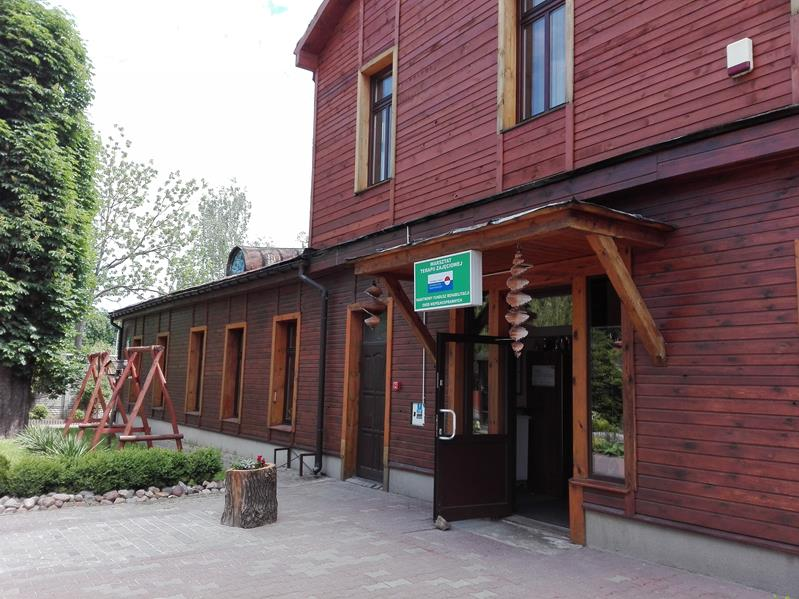
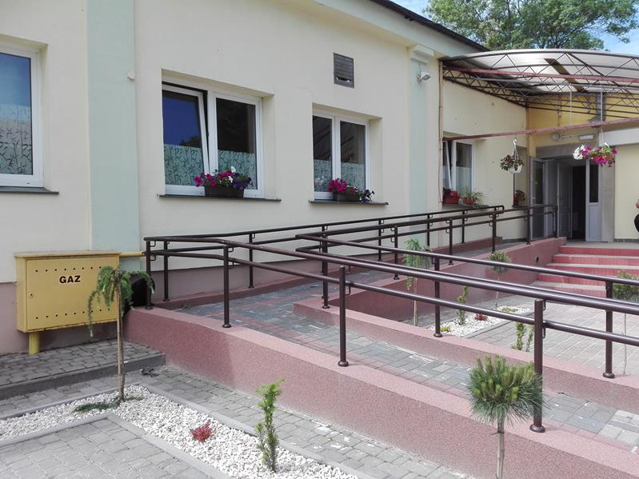
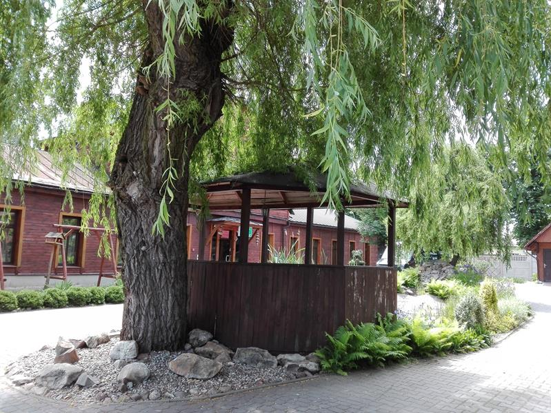
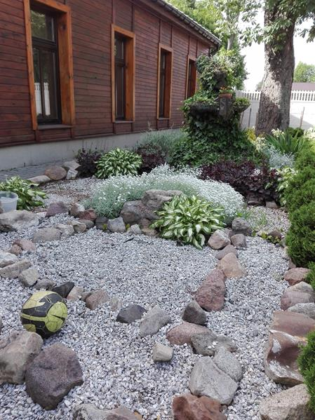
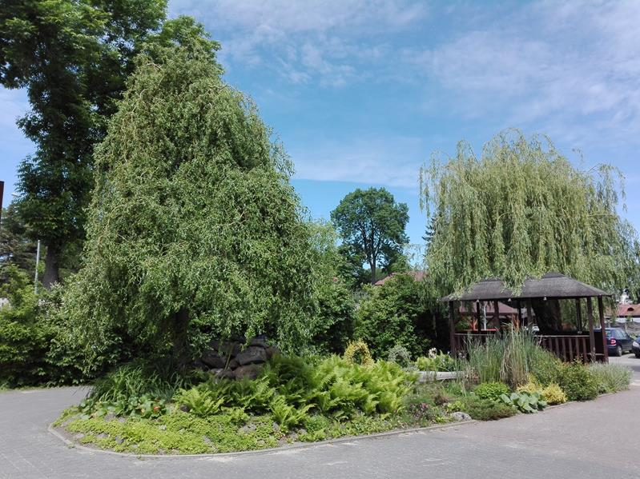

O nas
Warsztat Terapii Zajęciowej "Pod Kasztanami" w Chełmie rozpoczął działalność w grudniu 2003r. 
Do Warsztatu od października 2018 roku uczęszcza sześćdziesięciu uczestników. Są to osoby o różnym stopniu niepełnosprawności i z zaburzeniami obejmującymi niesprawność umysłową, ruchową, psychiczną, sensoryczną i somatyczną. 
Działalność WTZ jest prowadzona ze środków Państwowego Funduszu Rehabilitacji Osób Niepełnosprawnych. Otrzymujemy też dofinansowanie z Urzędu Miasta Chełm. 
Nasza siedziba znajduje się w Chełmie przy ulicy Lubelskiej 135 E. W Warsztacie zatrudniona jest wykwalifikowana kadra: kierownik, księgowa, psycholog, pielęgniarka, rehabilitantki, pracownik administracyjny, kierowca i instruktorzy terapii zajęciowej. Dla potrzeb osób niepełnosprawnych zostały otwarte następujące pracownie: ceramiczna, komputerowo-poligraficzna, stolarska, muzykoterapii, ogrodnicza, kulinarna, krawiecka i artystyczna. Pod koniec 2018 roku dzięki przychylności władz miasta otrzymaliśmy do użytku dodatkowy budynek usytuowany w pobliżu. Dzięki temu mogliśmy rozszerzyć działalność otwierając dodatkowe pracownie: rękodzieła, edukacji technicznej oraz pracownię porządkowo - gospodarczą. Dzięki temu stworzyliśmy warunki do terapii i rehabilitacji dla kolejnych dziesięciu osób z niepełnosprawnościami. 
Proces rehabilitacji uczestników warsztatów obejmuje działania w wielu zakresach. Warsztat Terapii Zajęciowej "Pod Kasztanami" tworzy spójną strukturę, gdzie najważniejsze miejsce zajmuje tarapia zajęciowa. Ma ona miejsce w 8 różnych pracowniach, które dotyczą najważniejszych sfer życia codziennego. Uczestnicy mają do dyspozycji: pracownię artystyczną i rękodzieła, gospodarczo-porządkową, komputerowo-poligraficzną, krawiecką, kulinarną, muzykoterapii, ogrodniczą, stolarską i edukacji technicznej.
W zależności od specyfiki pracowni, podopieczni doskonalą umiejętności niezbędne do życia codziennego zaczynając od przygotowywania posiłków, utrzymania porządku, kształtowania umiejętności manualnych, obsługi komputera, organizacji miejsca pracy, wyrażania emocji, wyrażania swoich opinii, rozbudzają również swoją wrażliwość na sztukę. Wszystko to sprawia, że podnoszą w ten sposób swój poziom zdolności społecznych wielopłąszczyznowo.
Codzienna praca ma dla wielu ogromne znaczenie. Sprawia, że każdy czuje się potrzebny. Daje poczucie aktywnego życia, zachęca do wychodzenia z domu. Umożliwia również spotykanie się w większym gronie, nawiązywanie przyjaźni, kontakt z różnymi ludźmi, którzy rozumieją potrzeby ludzi z niepełnosprawnościami. Ogólna akceptacja i wsparcie ze strony terapeutów, a także innych uczestników, zapobiega wykluczeniu społecznemu. 
Najważniejsze cele WTZ to:
- rozwijanie umiejętności, w tym wykonywanie czynności życia codziennego oraz zaradności osobistej przy zastosowaniu różnych technik terapii zajęciowej;
- przygotowanie do życia w środowisku społecznym, w szczególności poprzez rozwój umiejętności planowania i komunikowania się, dokonywania wyborów, decydowania o swoich sprawach oraz rozwój innych umiejętności w bardziej samodzielnym życiu, a także poprawę kondycji psychicznej i fizycznej;
- rozwijanie psychofizycznych sprawności niezbędnych w pracy;
- rozwijanie podstawowych oraz specjalistycznych umiejętności zawodowych umożliwiających podjęcie pracy w zakładzie aktywności zawodowej, czy też na otwartym rynku pracy.